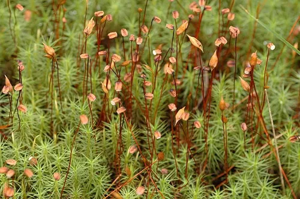

Pseudoditrichaceae
(No widely accepted common name)
Pseudoditrichaceae is a monotypic family of small, slender acrocarpous mosses, containing only the genus Pseudoditrichum. These mosses form loose tufts or grow scattered on soil, often preferring disturbed or calcareous ground in temperate or arctic-alpine regions. They resemble members of the Ditrichaceae or Seligeriaceae but possess a unique combination of features, particularly in their peristome structure.
Overview
The Pseudoditrichaceae family, with its single genus Pseudoditrichum and only one or two species (P. mirabile, P. australe), holds an uncertain phylogenetic position, often placed within the order Bryales, but sometimes considered potentially related to Dicranales or Pottiales. These small mosses have a disjunct distribution, found in temperate areas of Europe and North America, as well as bipolar regions including South America and New Zealand.
They are characterized by their small size, narrow lanceolate to subulate (awl-shaped) leaves with a strong costa, and erect capsules borne on long setae. The peristome structure is particularly noteworthy and variable; it can appear single, consisting of 16 papillose teeth, or double with a rudimentary endostome, distinguishing it from families it superficially resembles like Ditrichaceae (which typically has deeply split peristome teeth).
Ecologically, Pseudoditrichaceae species are often found as pioneers or colonists on bare, often calcareous or disturbed soil, in habitats such as trail edges, soil banks, or tundra. Their small size and specific habitat requirements make them easily overlooked.
Quick Facts
- Scientific Name: Pseudoditrichaceae
- Common Name: None widely used
- Number of Genera: 1 (Pseudoditrichum)
- Number of Species: 1-2
- Distribution: Disjunct temperate/bipolar (Europe, N. America, S. America, New Zealand).
- Evolutionary Group: Bryophytes - Mosses - Bryales (placement uncertain)
Key Characteristics (Moss Morphology)
Gametophyte: Growth Form and Habit
Plants are acrocarpous, small and slender, growing scattered or forming loose, green to brownish tufts.
Gametophyte: Stems
Stems are erect, simple or sparsely branched. A central strand is present.
Gametophyte: Leaves
Leaves are erect-spreading to somewhat secund, typically narrow, lanceolate to subulate (awl-shaped) from a slightly broader, often ovate base. Leaf apices are narrowly acute or acuminate. Margins are usually plane and entire or nearly so. The costa is single and strong, typically filling the subula and ending in the apex (percurrent) or extending slightly beyond (excurrent). Leaf cells are typically smooth, relatively firm-walled, and mostly rectangular (short-rectangular above, longer rectangular below).
Sporophyte: Seta, Capsule, and Peristome
Sexual condition is autoicous or dioicous. The seta is long, slender, and smooth. The capsule is exserted, typically erect and symmetrical, ovoid to shortly cylindric, and smooth. The operculum is conical to shortly rostrate. The peristome is variable, often appearing single with 16 lanceolate, papillose teeth that are not deeply split (unlike Ditrichaceae), or sometimes interpreted as double with a very rudimentary endostome (low basal membrane, absent segments and cilia).
Field Identification (Mosses)
Identifying Pseudoditrichaceae requires attention to its small size, narrow leaves, habitat, and erect capsules:
Primary Identification Features (Field/Hand Lens)
- Habit: Small, slender acrocarpous mosses in loose tufts or scattered.
- Leaves: Narrowly lanceolate to subulate (awl-shaped), often straight or slightly curved.
- Habitat: Bare soil, often disturbed or calcareous, in temperate or arctic-alpine areas.
- Strong Costa: Midrib prominent, extending to or beyond the leaf tip.
- Sporophytes: Erect, symmetrical capsules on long, slender setae.
Secondary Identification Features (Microscope often needed)
- Cell Shape: Confirm rectangular, smooth laminal cells.
- Peristome Structure: Key for confirmation – 16 undivided or slightly perforated teeth, papillose, rudimentary or absent endostome.
- Costa Cross-section: Can show specific anatomical details.
Common Confusion Points (Other Mosses)
- Ditrichaceae (Ditrichum, Pleuridium): Very similar in habit, leaf shape, and habitat. Ditrichaceae typically have peristome teeth that are deeply split into two filiform divisions. Pleuridium has cleistocarpous (closed) capsules.
- Seligeriaceae (Seligeria): Tiny acrocarps growing on rock (often calcareous), also with subulate leaves, but have different peristome structures (often shorter teeth) and usually different cell shapes.
- Bryaceae (small species, e.g., Pohlia): Some small Bryaceae grow on soil, but usually have broader leaves, different cell shapes (often rhomboidal), and typical Bryoid peristomes with well-developed endostomes.
- Dicranaceae (Dicranella): Can have narrow leaves, but often secund, costa structure may differ, capsules often inclined/curved, and peristome teeth are dicranoid (forked).
- Pottiaceae (small species): Some small Pottiales grow on soil, but often have broader upper leaf cells, papillose cells, or different costa structures and peristomes.
- Ceratodon purpureus (Ditrichaceae): Very common on disturbed soil, but has broader leaves with recurved margins and inclined, furrowed capsules with typical Ditrichum-like peristomes.
Field Guide Quick Reference (Mosses)
Look For:
- Small, slender acrocarpous tufts
- Habitat on bare soil (often disturbed/calcareous)
- Narrow, subulate leaves
- Strong costa reaching/exceeding tip
- Erect capsules on long setae
Key Variations:
- Tuft density
- Presence/absence of sporophytes
- Substrate details (calcareous vs. acidic)
Notable Genera
This monotypic family contains only the genus Pseudoditrichum:

Pseudoditrichum
(Genus)
The sole genus, represented by P. mirabile and possibly P. australe. Defined by its small size, narrow subulate leaves with a strong costa and rectangular cells, erect capsules on long setae, and a unique, variable peristome that distinguishes it from similar families like Ditrichaceae.
Phylogeny and Classification
Pseudoditrichaceae holds an uncertain phylogenetic position within the Bryopsida, though it is often placed within the order Bryales based on some sporophyte and peristome characteristics. However, its gametophyte features (narrow leaves, cell shape) are more reminiscent of families in the Dicranales (like Ditrichaceae) or Pottiales. Molecular studies have yielded somewhat conflicting results, sometimes placing it near Bryales, sometimes suggesting a more isolated position.
The family represents an interesting combination of morphological traits, blurring the lines between major acrocarpous moss orders. Its unique peristome structure (single-looking or with rudimentary endostome, teeth not deeply split) is particularly important in distinguishing it and understanding its evolutionary history. Further phylogenetic research is needed to clarify its precise relationships.
Position in Plant Phylogeny
- Kingdom: Plantae
- Division: Bryophyta (Mosses)
- Class: Bryopsida
- Order: Bryales (placement uncertain)
- Family: Pseudoditrichaceae
Evolutionary Significance
The Pseudoditrichaceae family is significant for:
- Phylogenetic Puzzle: Represents a lineage with a mosaic of characters, challenging traditional classifications based on morphology and highlighting the complexity of moss evolution.
- Peristome Variation: Shows an unusual peristome structure that differs from superficially similar families.
- Biogeography: Exhibits a wide but highly disjunct distribution pattern, suggesting potential ancient origins or long-distance dispersal capabilities.
- Ecological Niche: Occupies specific habitats (disturbed/calcareous soil) often favored by pioneer species.